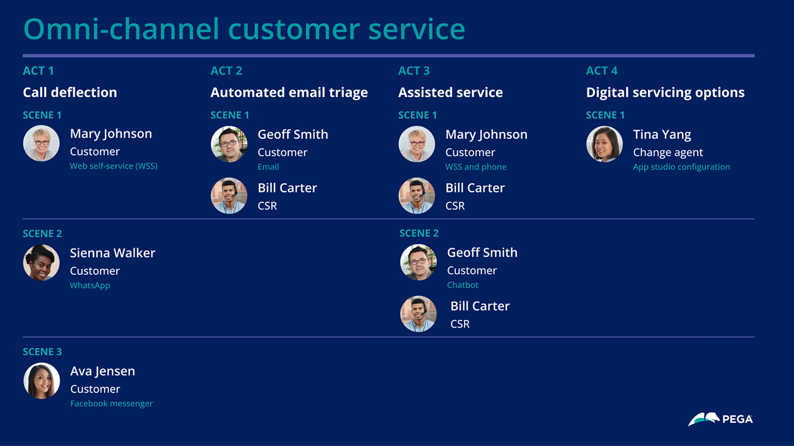
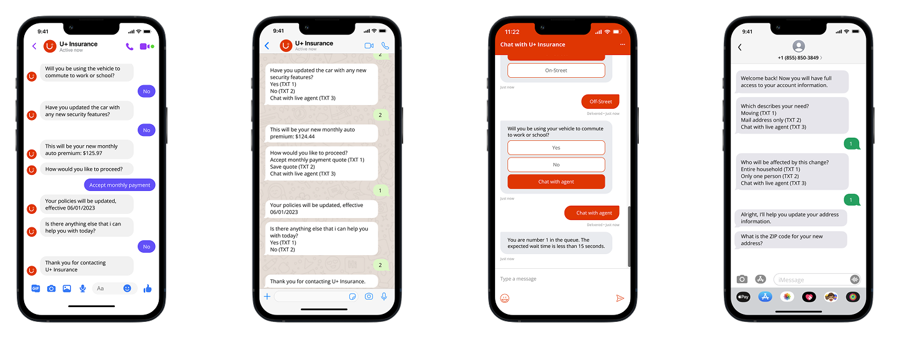
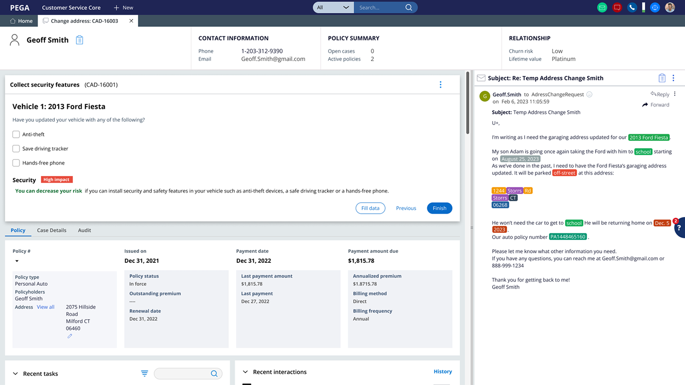
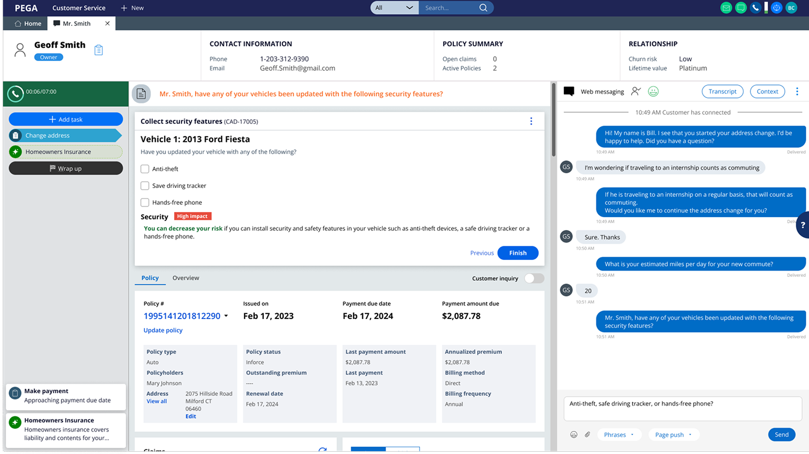
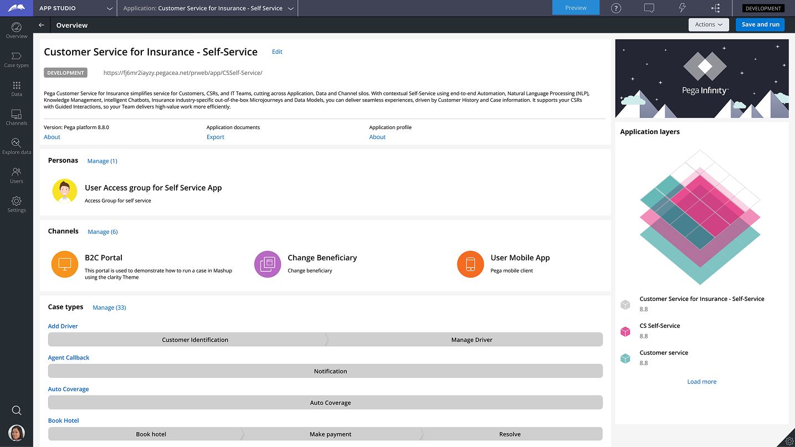

Pega · Case study
Omni-Channel Customer ServiceOmni-Channel Customer Service
DescripciónDescription
Un recorrido interactivo de 352 pantallas sobre atención omnicanal y automatización de flujos para el sector asegurador.A 352-screen click-through exploring omnichannel customer service and workflow automation for insurance.
Definición del problemaProblem statement
Las aseguradoras necesitan ofrecer interacciones personalizadas y proactivas en el canal preferido del cliente, sin perder continuidad en la experiencia.Insurers need to deliver personalized, proactive interactions in the customer’s preferred channel while maintaining a seamless experience.
Qué creéWhat I created
Un prototipo click-through que articula la historia de atención al cliente, con escenarios móviles, dashboards y vistas de autoservicio.A click-through prototype telling the customer-service story through mobile scenarios, dashboards, and self-service views.
Aprendizajes claveKey learnings
Los aprendizajes específicos aún no están documentados en el material del caso. Pendiente de completar.Specific learnings are not yet documented in the case material. To be completed.
Click-through de 352 pantallas sobre Workflow Automation. El customer engagement asistido por IA ayuda a las aseguradoras a ofrecer interacciones personalizadas y proactivas, reducir costes y brindar experiencias fluidas a sus clientes en el canal, lugar y momento que prefieran.
A click-through made of 352 screens, about Workflow Automation. AI-enabled customer engagement helps Insurance providers deliver personalised and proactive interactions, reduce cost, and provide seamless experiences to their customers in their preferred channel, location, and time.
Click-through — Omni-Channel Customer Service ↗





